Precalculus — Mathematical models
Trigonometry, limits and vectors. This guide contains 70 chapter-level worked lessons, review questions, answers, and linked illustrations.
Contents — select a chapter
Radian measure
Radians = degrees×π/180; one full circle is 2π radians.
180°=π radians.
- Multiply 180 by π/180
- Cancel 180.
Convert 90 degrees to radians divided by π.
Hint: 90/180=1/2.
Show answer and verify
0.5
Check the units, inputs and intermediate steps. Different solution methods may be valid.
Unit circle
Cosine gives x-coordinate and sine gives y-coordinate of point on unit circle.
sin(π/2)=1.
- At π/2 point is (0,1)
- y=1.
In RAD mode, sin(pi/6)
Hint: Thirty degrees is pi/6.
Show answer and verify
0.5
Check the units, inputs and intermediate steps. Different solution methods may be valid.
Trigonometric identities
sin²(x)+cos²(x)=1 for every real x.
At x=π/3, 3/4+1/4=1.
- Use unit-circle coordinates
- Square
- Sum.
Evaluate sin(pi/4)^2 + cos(pi/4)^2.
Hint: Pythagorean identity.
Show answer and verify
1
Check the units, inputs and intermediate steps. Different solution methods may be valid.
Inverse trig
arcsin, arccos and arctan give principal angles, not all coterminal angles.
asin(1/2)=π/6 in RAD mode.
- sin(π/6)=1/2
- Take principal angle.
atan(1) divided by pi in RAD mode
Hint: atan(1)=π/4; enter 0.25.
Show answer and verify
0.25
Check the units, inputs and intermediate steps. Different solution methods may be valid.
Exponential and logarithmic functions
Exponential growth multiplies by a base; logarithms invert exponential growth.
e^(ln(7))=7.
- Use the identity exp(ln(x))=x for x>0
- Substitute x=7.
exp(ln(12))
Hint: Inverse functions cancel.
Show answer and verify
12
Check the units, inputs and intermediate steps. Different solution methods may be valid.
Vectors
A vector has direction and magnitude; ||(a,b)||=√(a²+b²).
Magnitude of (6,8) is 10.
- Compute 36+64=100
- Square root 10.
Magnitude of vector (5,12)?
Hint: Pythagorean theorem.
Show answer and verify
13
Check the units, inputs and intermediate steps. Different solution methods may be valid.
Dot product
(a,b)·(c,d)=ac+bd; orthogonal vectors have dot product zero.
(1,2)·(3,4)=11.
- Multiply first components: 1×3=3
- Multiply second components: 2×4=8
- Add to obtain 11.
Dot product (2,−1) and (4,3)?
Hint: 2×4 − 1×3.
Show answer and verify
5
Check the units, inputs and intermediate steps. Different solution methods may be valid.
Polar coordinates
x=r cosθ,y=r sinθ converts polar to rectangular coordinates.
r=2,θ=0 yields (2,0).
- cos0=1,sin0=0
- Multiply by radius.
For r=4 and θ=π/2, what is y?
Hint: sin(pi/2)=1.
Show answer and verify
4
Check the units, inputs and intermediate steps. Different solution methods may be valid.
Function limits
If f is continuous at a, lim x→a f(x)=f(a).
lim x→2 of x²+3 = 7.
- Polynomial is continuous at two
- Substitute x=2: 2²+3=7.
lim x→3 of (x²+1)?
Hint: Direct substitution.
Show answer and verify
10
Check the units, inputs and intermediate steps. Different solution methods may be valid.
Series introduction
A finite geometric sum equals a(1−r^n)/(1−r) for r≠1.
1+2+4+8=15.
- r=2,n=4
- (1−16)/(1−2)=15.
Find 1+3+9+27.
Hint: Add four geometric terms.
Show answer and verify
40
Check the units, inputs and intermediate steps. Different solution methods may be valid.
Radian measure and arc length
Radian measure and arc length: Use the unit circle and angle identities to connect sine and cosine. In calculus, trigonometric derivatives use radians.
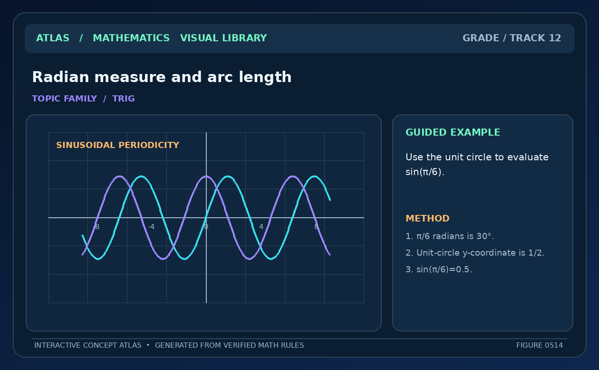
Use the unit circle to evaluate sin(π/6).
- π/6 radians is 30°.
- Unit-circle y-coordinate is 1/2.
- sin(π/6)=0.5.
What is sin(π/2)?
Hint: At 90° on the unit circle the y-coordinate is 1.
Show answer and verify
1
Check the units, inputs and intermediate steps. Different solution methods may be valid.
Reference angles
Reference angles: Use the unit circle and angle identities to connect sine and cosine. In calculus, trigonometric derivatives use radians.
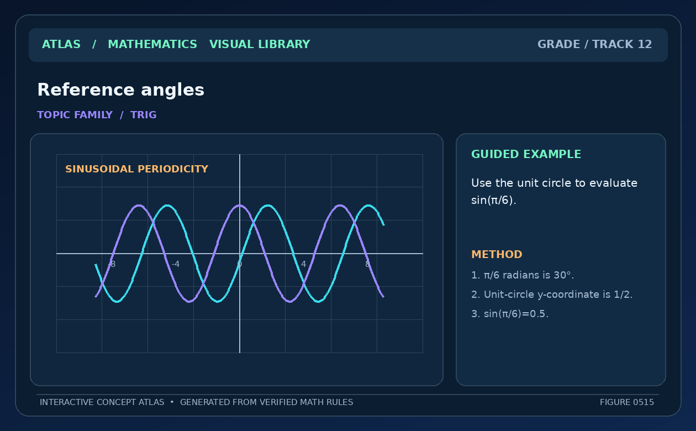
Use the unit circle to evaluate sin(π/6).
- π/6 radians is 30°.
- Unit-circle y-coordinate is 1/2.
- sin(π/6)=0.5.
What is sin(π/2)?
Hint: At 90° on the unit circle the y-coordinate is 1.
Show answer and verify
1
Check the units, inputs and intermediate steps. Different solution methods may be valid.
Unit circle coordinates
Unit circle coordinates: Use the unit circle and angle identities to connect sine and cosine. In calculus, trigonometric derivatives use radians.
Use the unit circle to evaluate sin(π/6).
- π/6 radians is 30°.
- Unit-circle y-coordinate is 1/2.
- sin(π/6)=0.5.
What is sin(π/2)?
Hint: At 90° on the unit circle the y-coordinate is 1.
Show answer and verify
1
Check the units, inputs and intermediate steps. Different solution methods may be valid.
Trigonometric graph transformations
Trigonometric graph transformations: Use the unit circle and angle identities to connect sine and cosine. In calculus, trigonometric derivatives use radians.
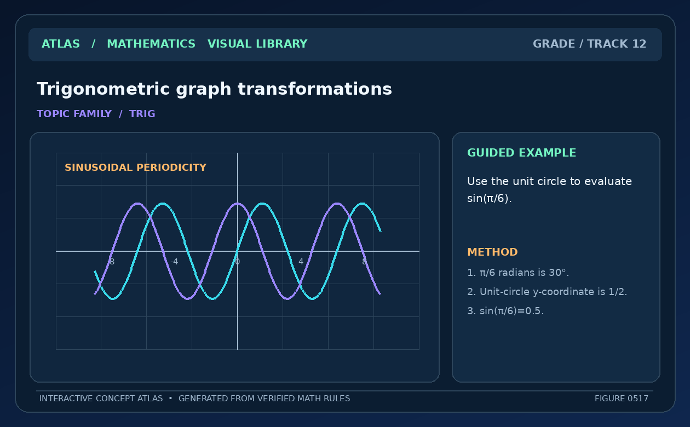
Use the unit circle to evaluate sin(π/6).
- π/6 radians is 30°.
- Unit-circle y-coordinate is 1/2.
- sin(π/6)=0.5.
What is sin(π/2)?
Hint: At 90° on the unit circle the y-coordinate is 1.
Show answer and verify
1
Check the units, inputs and intermediate steps. Different solution methods may be valid.
Sinusoid amplitude and period
Sinusoid amplitude and period: Use the unit circle and angle identities to connect sine and cosine. In calculus, trigonometric derivatives use radians.
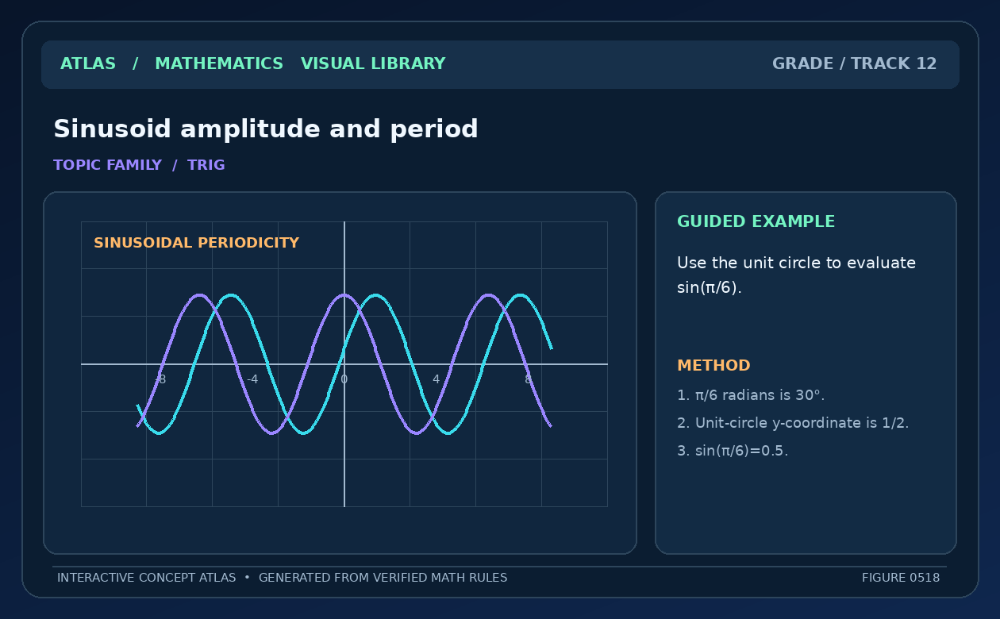
Use the unit circle to evaluate sin(π/6).
- π/6 radians is 30°.
- Unit-circle y-coordinate is 1/2.
- sin(π/6)=0.5.
What is sin(π/2)?
Hint: At 90° on the unit circle the y-coordinate is 1.
Show answer and verify
1
Check the units, inputs and intermediate steps. Different solution methods may be valid.
Sine and cosine identities
Sine and cosine identities: Use the unit circle and angle identities to connect sine and cosine. In calculus, trigonometric derivatives use radians.
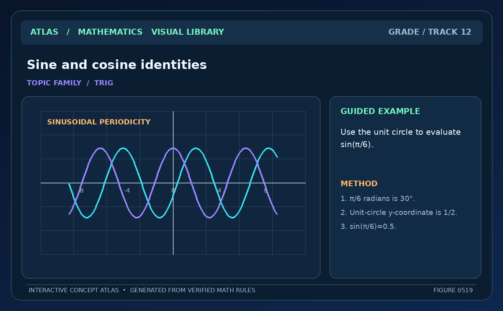
Use the unit circle to evaluate sin(π/6).
- π/6 radians is 30°.
- Unit-circle y-coordinate is 1/2.
- sin(π/6)=0.5.
What is sin(π/2)?
Hint: At 90° on the unit circle the y-coordinate is 1.
Show answer and verify
1
Check the units, inputs and intermediate steps. Different solution methods may be valid.
Pythagorean identities
Pythagorean identities: Use the unit circle and angle identities to connect sine and cosine. In calculus, trigonometric derivatives use radians.
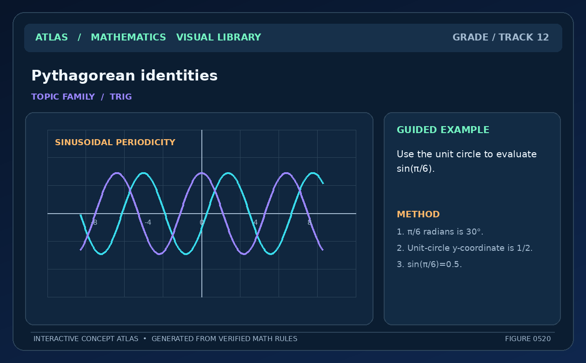
Use the unit circle to evaluate sin(π/6).
- π/6 radians is 30°.
- Unit-circle y-coordinate is 1/2.
- sin(π/6)=0.5.
What is sin(π/2)?
Hint: At 90° on the unit circle the y-coordinate is 1.
Show answer and verify
1
Check the units, inputs and intermediate steps. Different solution methods may be valid.
Sum and difference identities
Sum and difference identities: Use the unit circle and angle identities to connect sine and cosine. In calculus, trigonometric derivatives use radians.
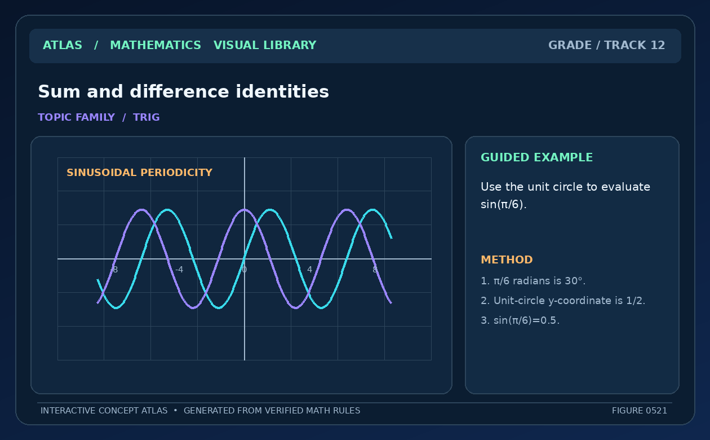
Use the unit circle to evaluate sin(π/6).
- π/6 radians is 30°.
- Unit-circle y-coordinate is 1/2.
- sin(π/6)=0.5.
What is sin(π/2)?
Hint: At 90° on the unit circle the y-coordinate is 1.
Show answer and verify
1
Check the units, inputs and intermediate steps. Different solution methods may be valid.
Double-angle identities
Double-angle identities: Use the unit circle and angle identities to connect sine and cosine. In calculus, trigonometric derivatives use radians.
Use the unit circle to evaluate sin(π/6).
- π/6 radians is 30°.
- Unit-circle y-coordinate is 1/2.
- sin(π/6)=0.5.
What is sin(π/2)?
Hint: At 90° on the unit circle the y-coordinate is 1.
Show answer and verify
1
Check the units, inputs and intermediate steps. Different solution methods may be valid.
Half-angle identities
Half-angle identities: Use the unit circle and angle identities to connect sine and cosine. In calculus, trigonometric derivatives use radians.
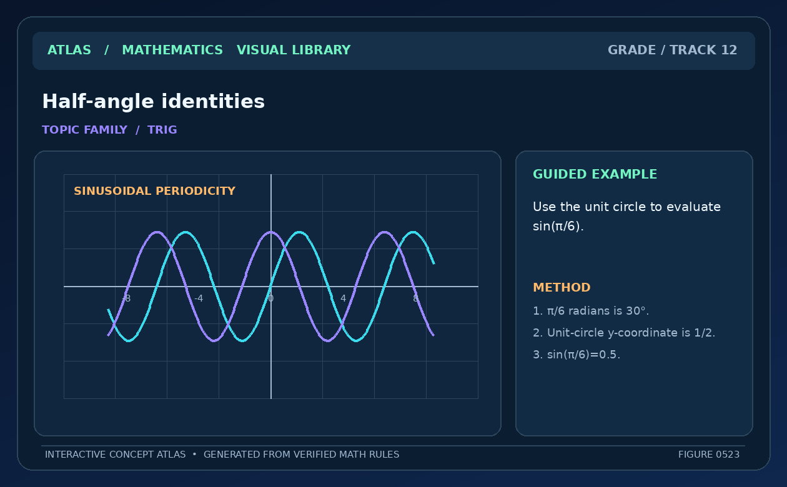
Use the unit circle to evaluate sin(π/6).
- π/6 radians is 30°.
- Unit-circle y-coordinate is 1/2.
- sin(π/6)=0.5.
What is sin(π/2)?
Hint: At 90° on the unit circle the y-coordinate is 1.
Show answer and verify
1
Check the units, inputs and intermediate steps. Different solution methods may be valid.
Trigonometric equations
Trigonometric equations: Use the unit circle and angle identities to connect sine and cosine. In calculus, trigonometric derivatives use radians.
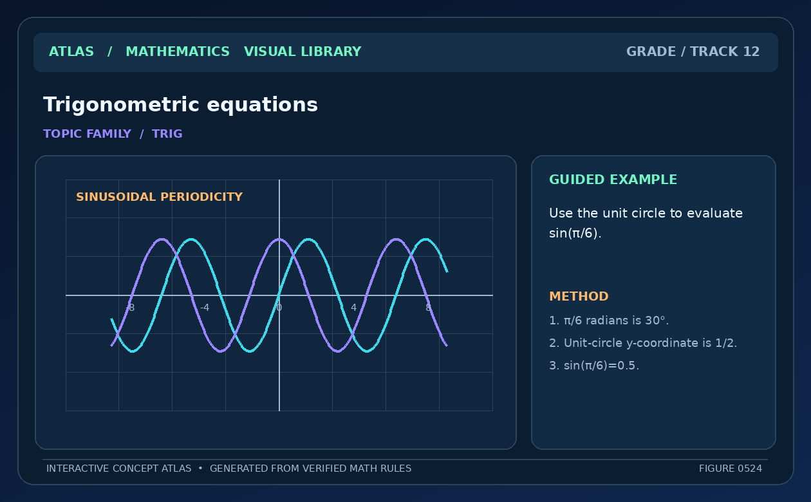
Use the unit circle to evaluate sin(π/6).
- π/6 radians is 30°.
- Unit-circle y-coordinate is 1/2.
- sin(π/6)=0.5.
What is sin(π/2)?
Hint: At 90° on the unit circle the y-coordinate is 1.
Show answer and verify
1
Check the units, inputs and intermediate steps. Different solution methods may be valid.
Inverse trigonometric functions
Inverse trigonometric functions: Use the unit circle and angle identities to connect sine and cosine. In calculus, trigonometric derivatives use radians.
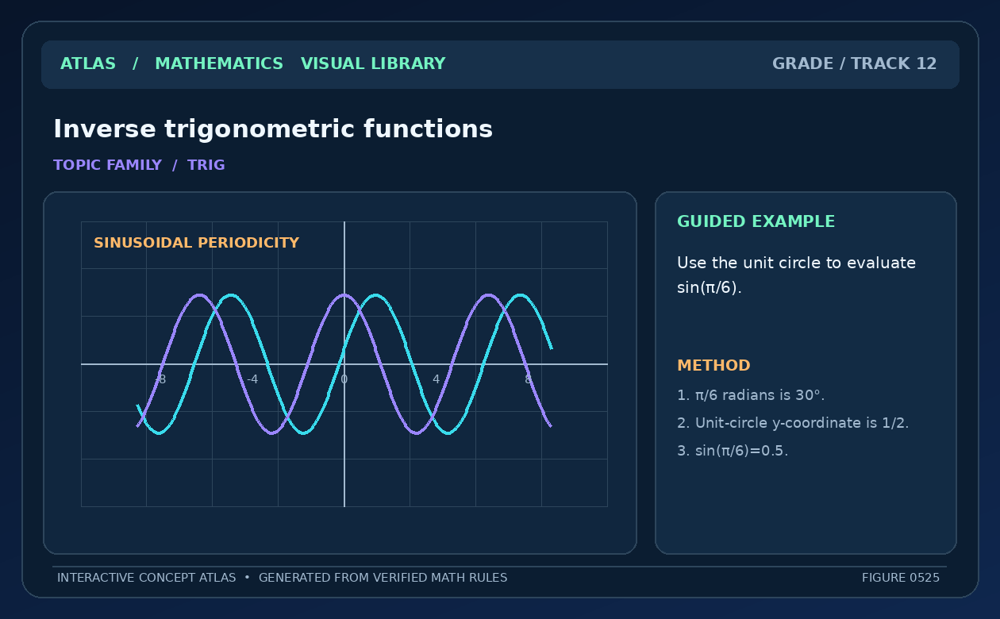
Use the unit circle to evaluate sin(π/6).
- π/6 radians is 30°.
- Unit-circle y-coordinate is 1/2.
- sin(π/6)=0.5.
What is sin(π/2)?
Hint: At 90° on the unit circle the y-coordinate is 1.
Show answer and verify
1
Check the units, inputs and intermediate steps. Different solution methods may be valid.
Law of sines
Law of sines: Use the unit circle and angle identities to connect sine and cosine. In calculus, trigonometric derivatives use radians.
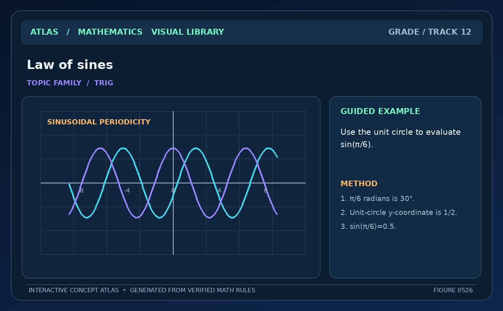
Use the unit circle to evaluate sin(π/6).
- π/6 radians is 30°.
- Unit-circle y-coordinate is 1/2.
- sin(π/6)=0.5.
What is sin(π/2)?
Hint: At 90° on the unit circle the y-coordinate is 1.
Show answer and verify
1
Check the units, inputs and intermediate steps. Different solution methods may be valid.
Law of cosines
Law of cosines: Use the unit circle and angle identities to connect sine and cosine. In calculus, trigonometric derivatives use radians.
Use the unit circle to evaluate sin(π/6).
- π/6 radians is 30°.
- Unit-circle y-coordinate is 1/2.
- sin(π/6)=0.5.
What is sin(π/2)?
Hint: At 90° on the unit circle the y-coordinate is 1.
Show answer and verify
1
Check the units, inputs and intermediate steps. Different solution methods may be valid.
Triangle area with sine
Triangle area with sine: Use the unit circle and angle identities to connect sine and cosine. In calculus, trigonometric derivatives use radians.
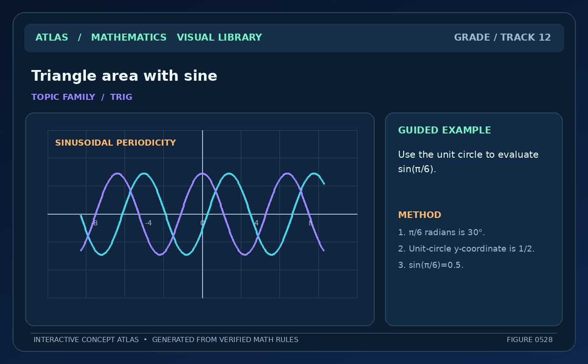
Use the unit circle to evaluate sin(π/6).
- π/6 radians is 30°.
- Unit-circle y-coordinate is 1/2.
- sin(π/6)=0.5.
What is sin(π/2)?
Hint: At 90° on the unit circle the y-coordinate is 1.
Show answer and verify
1
Check the units, inputs and intermediate steps. Different solution methods may be valid.
Function notation and composition
Function notation and composition: Specify the function rule and its domain; a valid input has one output. Track how vertical/horizontal transformations affect a graph.
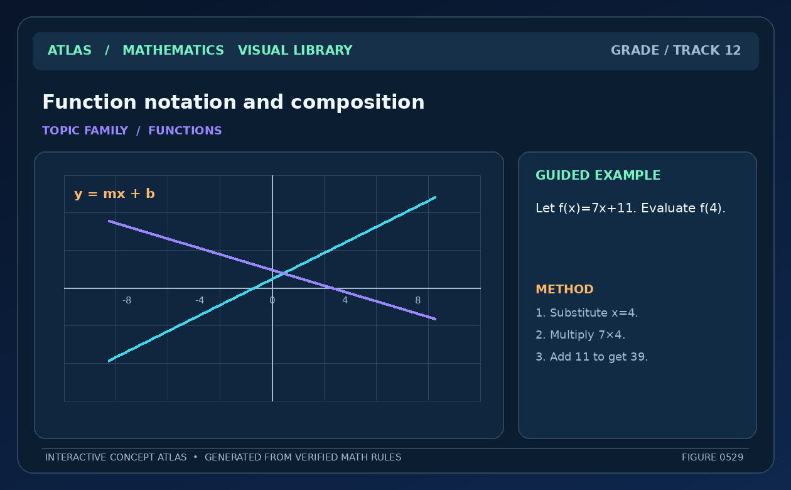
Let f(x)=7x+11. Evaluate f(4).
- Substitute x=4.
- Multiply 7×4.
- Add 11 to get 39.
If f(x)=11x+4, calculate f(7).
Hint: Replace every x by the requested input.
Show answer and verify
81
Check the units, inputs and intermediate steps. Different solution methods may be valid.
Inverse functions
Inverse functions: Specify the function rule and its domain; a valid input has one output. Track how vertical/horizontal transformations affect a graph.
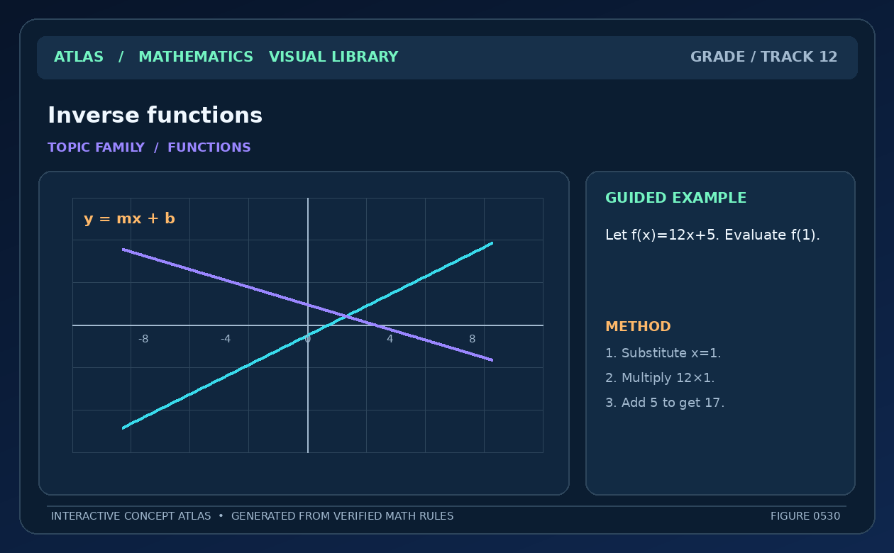
Let f(x)=12x+5. Evaluate f(1).
- Substitute x=1.
- Multiply 12×1.
- Add 5 to get 17.
If f(x)=5x+1, calculate f(12).
Hint: Replace every x by the requested input.
Show answer and verify
61
Check the units, inputs and intermediate steps. Different solution methods may be valid.
Transformations of functions
Transformations of functions: Specify the function rule and its domain; a valid input has one output. Track how vertical/horizontal transformations affect a graph.
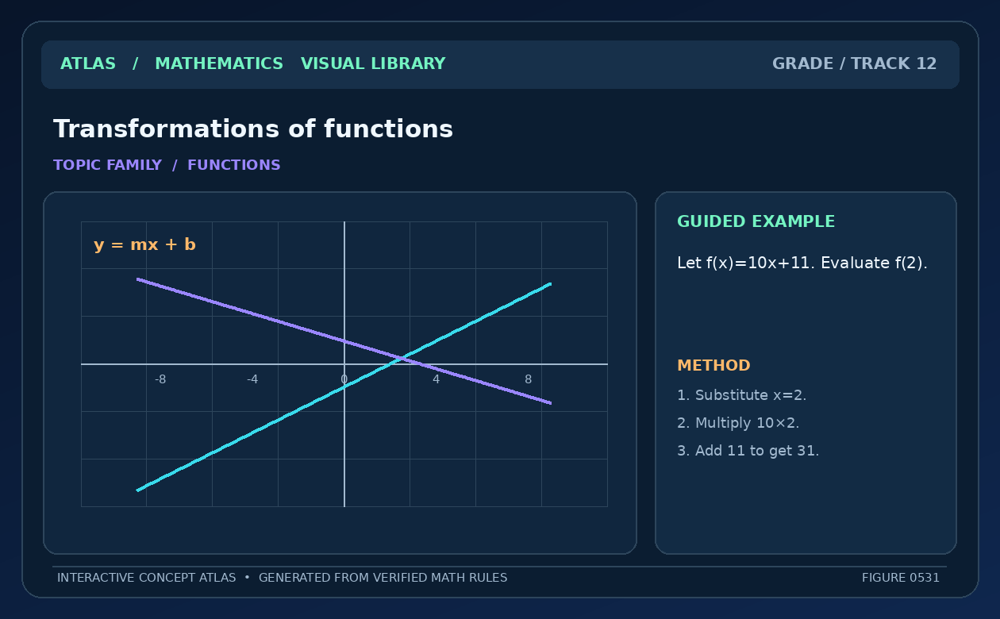
Let f(x)=10x+11. Evaluate f(2).
- Substitute x=2.
- Multiply 10×2.
- Add 11 to get 31.
If f(x)=11x+2, calculate f(10).
Hint: Replace every x by the requested input.
Show answer and verify
112
Check the units, inputs and intermediate steps. Different solution methods may be valid.
Even and odd functions
Even and odd functions: Specify the function rule and its domain; a valid input has one output. Track how vertical/horizontal transformations affect a graph.
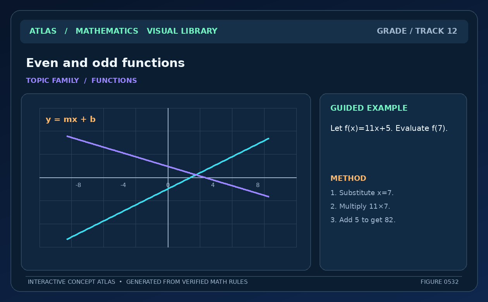
Let f(x)=11x+5. Evaluate f(7).
- Substitute x=7.
- Multiply 11×7.
- Add 5 to get 82.
If f(x)=5x+7, calculate f(11).
Hint: Replace every x by the requested input.
Show answer and verify
62
Check the units, inputs and intermediate steps. Different solution methods may be valid.
Piecewise-defined functions
Piecewise-defined functions: Specify the function rule and its domain; a valid input has one output. Track how vertical/horizontal transformations affect a graph.
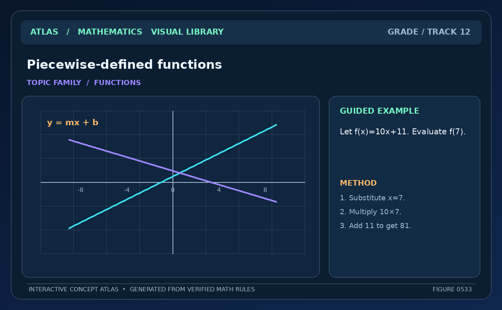
Let f(x)=10x+11. Evaluate f(7).
- Substitute x=7.
- Multiply 10×7.
- Add 11 to get 81.
If f(x)=11x+7, calculate f(10).
Hint: Replace every x by the requested input.
Show answer and verify
117
Check the units, inputs and intermediate steps. Different solution methods may be valid.
Parametric representation introduction
Parametric representation introduction: Specify the function rule and its domain; a valid input has one output. Track how vertical/horizontal transformations affect a graph.
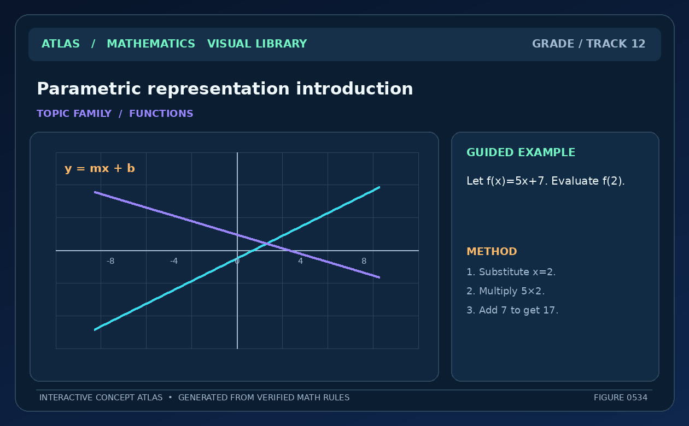
Let f(x)=5x+7. Evaluate f(2).
- Substitute x=2.
- Multiply 5×2.
- Add 7 to get 17.
If f(x)=7x+2, calculate f(5).
Hint: Replace every x by the requested input.
Show answer and verify
37
Check the units, inputs and intermediate steps. Different solution methods may be valid.
Polynomial function analysis
Polynomial function analysis: Specify the function rule and its domain; a valid input has one output. Track how vertical/horizontal transformations affect a graph.
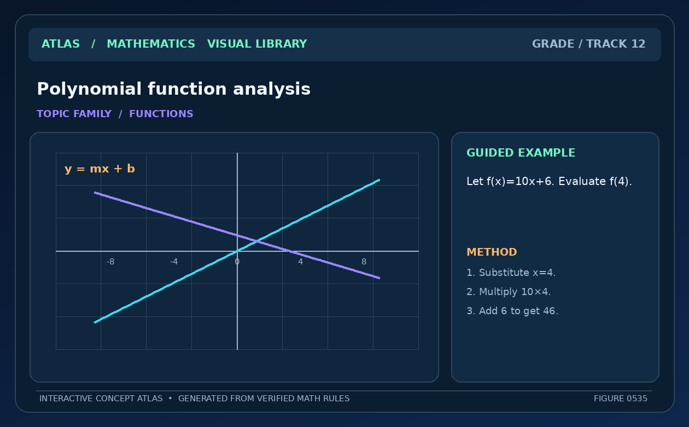
Let f(x)=10x+6. Evaluate f(4).
- Substitute x=4.
- Multiply 10×4.
- Add 6 to get 46.
If f(x)=6x+4, calculate f(10).
Hint: Replace every x by the requested input.
Show answer and verify
64
Check the units, inputs and intermediate steps. Different solution methods may be valid.
Rational function analysis
Rational function analysis: Specify the function rule and its domain; a valid input has one output. Track how vertical/horizontal transformations affect a graph.
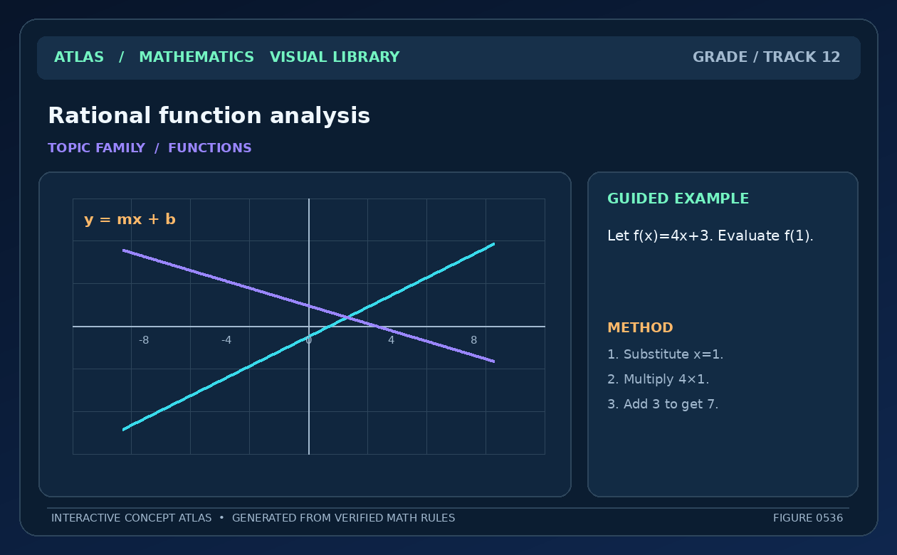
Let f(x)=4x+3. Evaluate f(1).
- Substitute x=1.
- Multiply 4×1.
- Add 3 to get 7.
If f(x)=3x+1, calculate f(4).
Hint: Replace every x by the requested input.
Show answer and verify
13
Check the units, inputs and intermediate steps. Different solution methods may be valid.
Exponential growth models
Exponential growth models: Use exponential models when a quantity changes by a fixed fraction per period. Compounding multiplies a balance by (1+r) at each complete period.
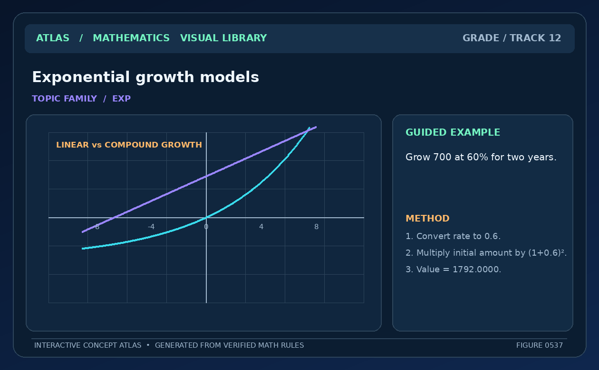
Grow 700 at 60% for two years.
- Convert rate to 0.6.
- Multiply initial amount by (1+0.6)².
- Value = 1792.0000.
Grow 500 by 60% for one year.
Hint: Multiply once by 1 plus the decimal growth rate.
Show answer and verify
800.0
Check the units, inputs and intermediate steps. Different solution methods may be valid.
Exponential regression principles
Exponential regression principles: Use exponential models when a quantity changes by a fixed fraction per period. Compounding multiplies a balance by (1+r) at each complete period.
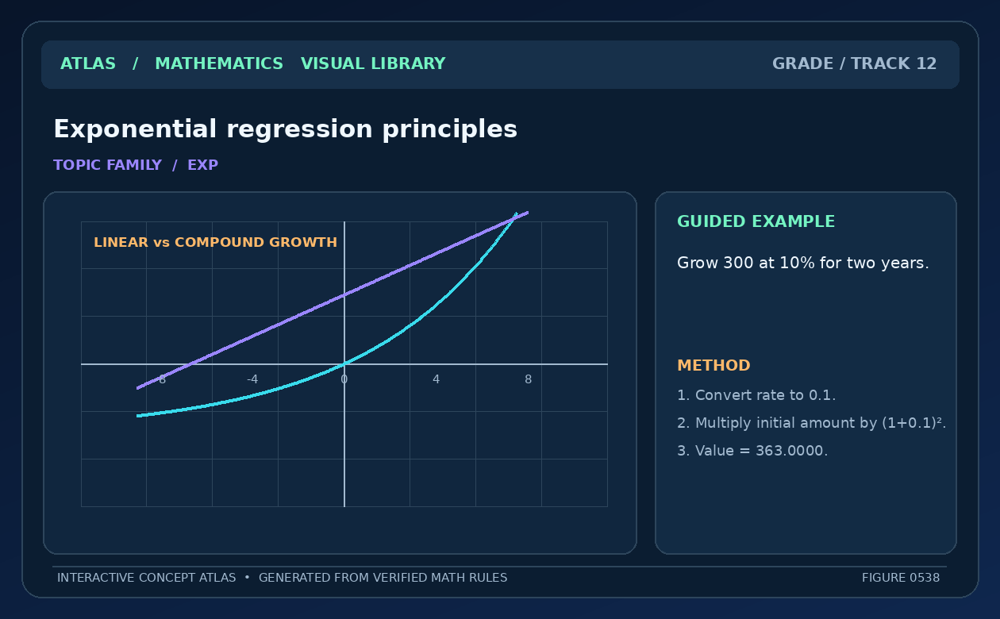
Grow 300 at 10% for two years.
- Convert rate to 0.1.
- Multiply initial amount by (1+0.1)².
- Value = 363.0000.
Grow 1000 by 10% for one year.
Hint: Multiply once by 1 plus the decimal growth rate.
Show answer and verify
1100.0
Check the units, inputs and intermediate steps. Different solution methods may be valid.
Population models and doubling time
Population models and doubling time: Use exponential models when a quantity changes by a fixed fraction per period. Compounding multiplies a balance by (1+r) at each complete period.
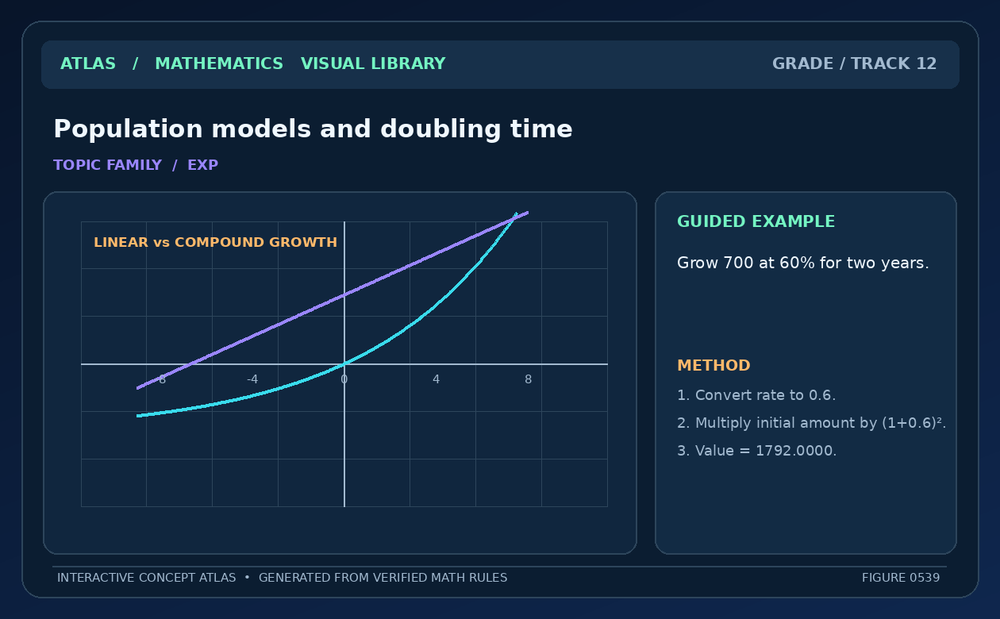
Grow 700 at 60% for two years.
- Convert rate to 0.6.
- Multiply initial amount by (1+0.6)².
- Value = 1792.0000.
Grow 900 by 60% for one year.
Hint: Multiply once by 1 plus the decimal growth rate.
Show answer and verify
1440.0
Check the units, inputs and intermediate steps. Different solution methods may be valid.
Logarithm as inverse
Logarithm as inverse: A logarithm gives the exponent required to obtain a value from a base. Logarithmic inputs must be positive for real-valued logs.
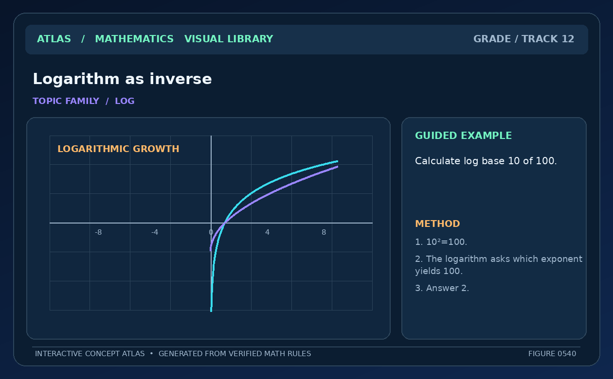
Calculate log base 10 of 100.
- 10²=100.
- The logarithm asks which exponent yields 100.
- Answer 2.
What is log base 3 of 27?
Hint: Logarithm is the inverse of exponentiation.
Show answer and verify
3
Check the units, inputs and intermediate steps. Different solution methods may be valid.
Exponential and logarithmic derivatives preview
Exponential and logarithmic derivatives preview: A logarithm gives the exponent required to obtain a value from a base. Logarithmic inputs must be positive for real-valued logs.
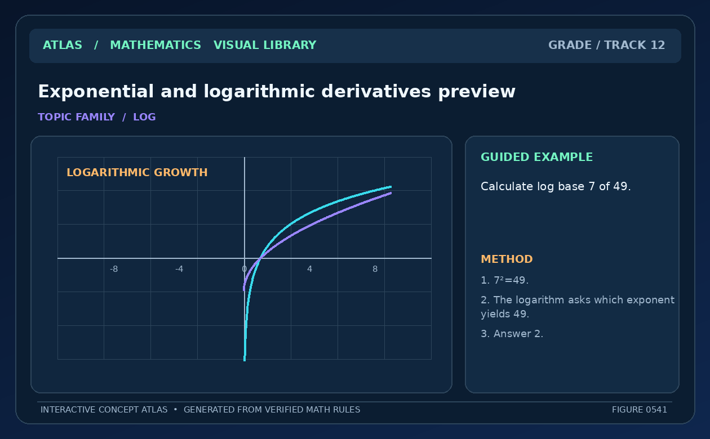
Calculate log base 7 of 49.
- 7²=49.
- The logarithm asks which exponent yields 49.
- Answer 2.
What is log base 5 of 125?
Hint: Logarithm is the inverse of exponentiation.
Show answer and verify
3
Check the units, inputs and intermediate steps. Different solution methods may be valid.
Logistic growth introduction
Logistic growth introduction: A logarithm gives the exponent required to obtain a value from a base. Logarithmic inputs must be positive for real-valued logs.
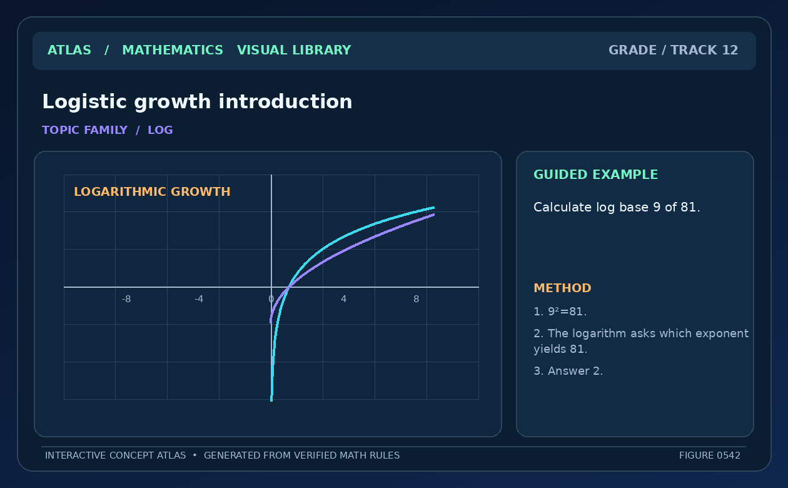
Calculate log base 9 of 81.
- 9²=81.
- The logarithm asks which exponent yields 81.
- Answer 2.
What is log base 8 of 512?
Hint: Logarithm is the inverse of exponentiation.
Show answer and verify
3
Check the units, inputs and intermediate steps. Different solution methods may be valid.
Recursive sequences
Recursive sequences: Express the nth term through a pattern or recurrence, then verify initial terms. An arithmetic sequence adds a constant difference at each step.
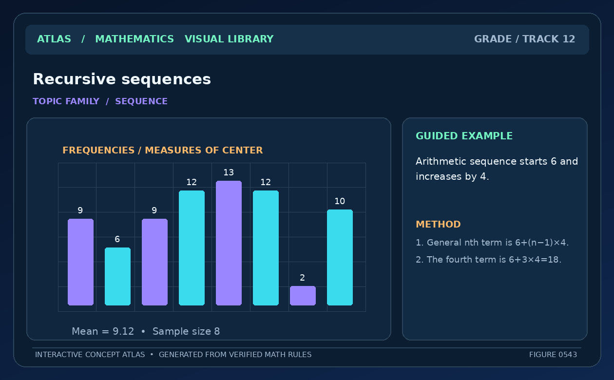
Arithmetic sequence starts 6 and increases by 4.
- General nth term is 6+(n−1)×4.
- The fourth term is 6+3×4=18.
Find the fifth term of start 6, step 4.
Hint: The fifth term has four increments.
Show answer and verify
22
Check the units, inputs and intermediate steps. Different solution methods may be valid.
Arithmetic progression sums
Arithmetic progression sums: Express the nth term through a pattern or recurrence, then verify initial terms. An arithmetic sequence adds a constant difference at each step.
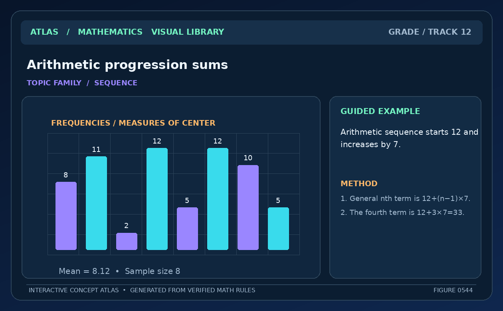
Arithmetic sequence starts 12 and increases by 7.
- General nth term is 12+(n−1)×7.
- The fourth term is 12+3×7=33.
Find the fifth term of start 12, step 7.
Hint: The fifth term has four increments.
Show answer and verify
40
Check the units, inputs and intermediate steps. Different solution methods may be valid.
Geometric progression sums
Geometric progression sums: Express the nth term through a pattern or recurrence, then verify initial terms. An arithmetic sequence adds a constant difference at each step.
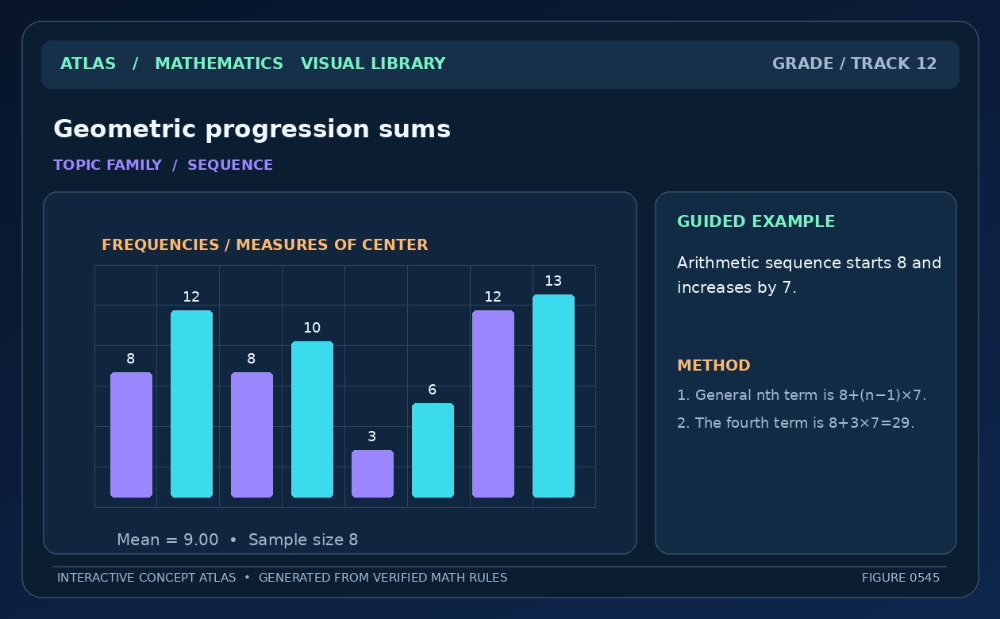
Arithmetic sequence starts 8 and increases by 7.
- General nth term is 8+(n−1)×7.
- The fourth term is 8+3×7=29.
Find the fifth term of start 8, step 7.
Hint: The fifth term has four increments.
Show answer and verify
36
Check the units, inputs and intermediate steps. Different solution methods may be valid.
Finite telescoping series
Finite telescoping series: Express the nth term through a pattern or recurrence, then verify initial terms. An arithmetic sequence adds a constant difference at each step.
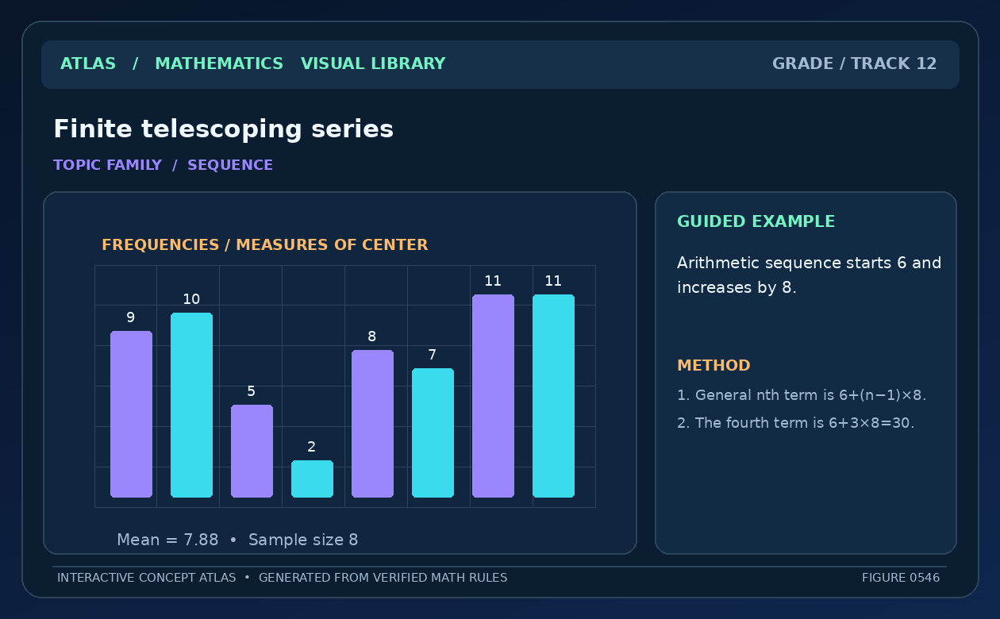
Arithmetic sequence starts 6 and increases by 8.
- General nth term is 6+(n−1)×8.
- The fourth term is 6+3×8=30.
Find the fifth term of start 6, step 8.
Hint: The fifth term has four increments.
Show answer and verify
38
Check the units, inputs and intermediate steps. Different solution methods may be valid.
Binomial theorem
Binomial theorem: Express the nth term through a pattern or recurrence, then verify initial terms. An arithmetic sequence adds a constant difference at each step.
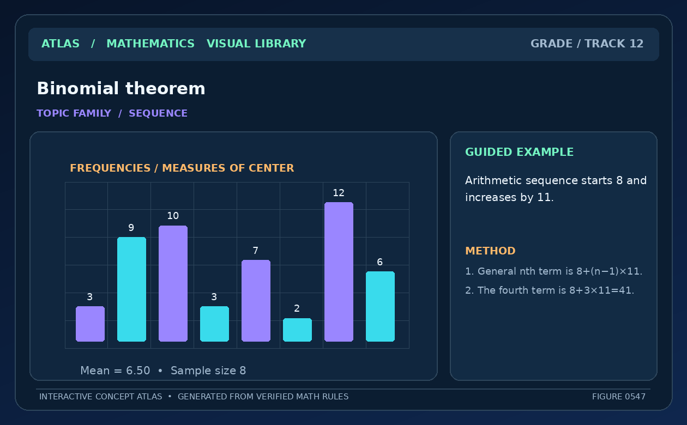
Arithmetic sequence starts 8 and increases by 11.
- General nth term is 8+(n−1)×11.
- The fourth term is 8+3×11=41.
Find the fifth term of start 8, step 11.
Hint: The fifth term has four increments.
Show answer and verify
52
Check the units, inputs and intermediate steps. Different solution methods may be valid.
Pascal triangle
Pascal triangle: Express the nth term through a pattern or recurrence, then verify initial terms. An arithmetic sequence adds a constant difference at each step.
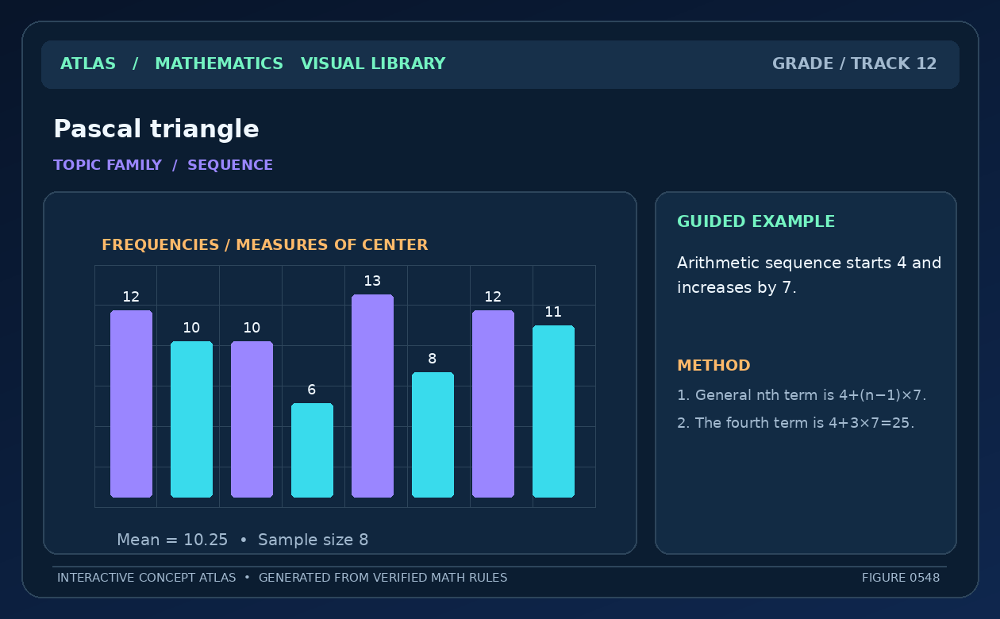
Arithmetic sequence starts 4 and increases by 7.
- General nth term is 4+(n−1)×7.
- The fourth term is 4+3×7=25.
Find the fifth term of start 4, step 7.
Hint: The fifth term has four increments.
Show answer and verify
32
Check the units, inputs and intermediate steps. Different solution methods may be valid.
Two-dimensional vectors
Two-dimensional vectors: Resolve vectors into components before adding or taking dot products. Magnitude in 2D is sqrt(x²+y²).
Add vectors (7,10) and (4,−10).
- Add x-components: 7+4=11.
- Add y-components: 10−10=0.
- Sum = (11,0).
Find the x-component of (7,10)+(4,4).
Hint: Add corresponding components.
Show answer and verify
11
Check the units, inputs and intermediate steps. Different solution methods may be valid.
Magnitude and direction
Magnitude and direction: Resolve vectors into components before adding or taking dot products. Magnitude in 2D is sqrt(x²+y²).
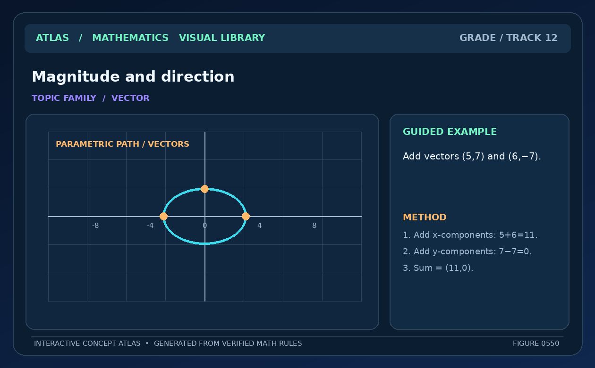
Add vectors (5,7) and (6,−7).
- Add x-components: 5+6=11.
- Add y-components: 7−7=0.
- Sum = (11,0).
Find the x-component of (5,7)+(6,6).
Hint: Add corresponding components.
Show answer and verify
11
Check the units, inputs and intermediate steps. Different solution methods may be valid.
Vector addition
Vector addition: Resolve vectors into components before adding or taking dot products. Magnitude in 2D is sqrt(x²+y²).
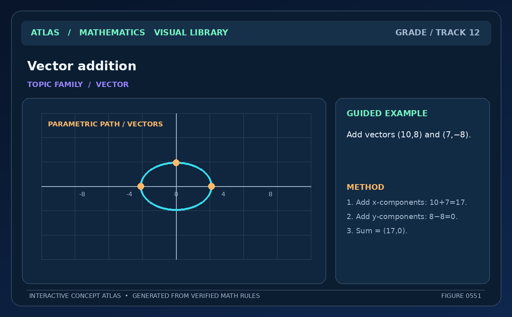
Add vectors (10,8) and (7,−8).
- Add x-components: 10+7=17.
- Add y-components: 8−8=0.
- Sum = (17,0).
Find the x-component of (10,8)+(7,7).
Hint: Add corresponding components.
Show answer and verify
17
Check the units, inputs and intermediate steps. Different solution methods may be valid.
Scalar multiplication
Scalar multiplication: Resolve vectors into components before adding or taking dot products. Magnitude in 2D is sqrt(x²+y²).
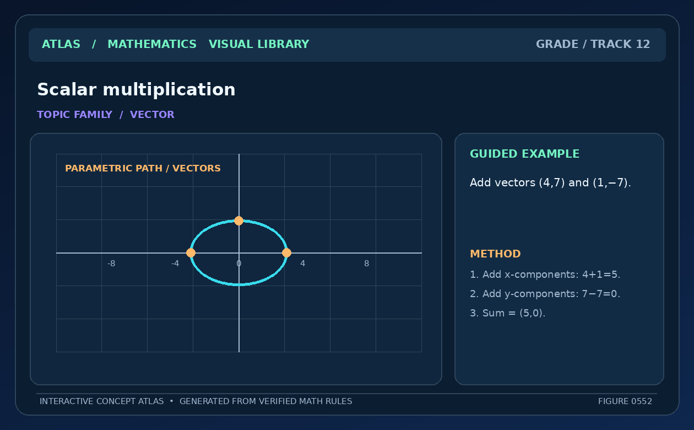
Add vectors (4,7) and (1,−7).
- Add x-components: 4+1=5.
- Add y-components: 7−7=0.
- Sum = (5,0).
Find the x-component of (4,7)+(1,1).
Hint: Add corresponding components.
Show answer and verify
5
Check the units, inputs and intermediate steps. Different solution methods may be valid.
Dot product
Dot product: Resolve vectors into components before adding or taking dot products. Magnitude in 2D is sqrt(x²+y²).
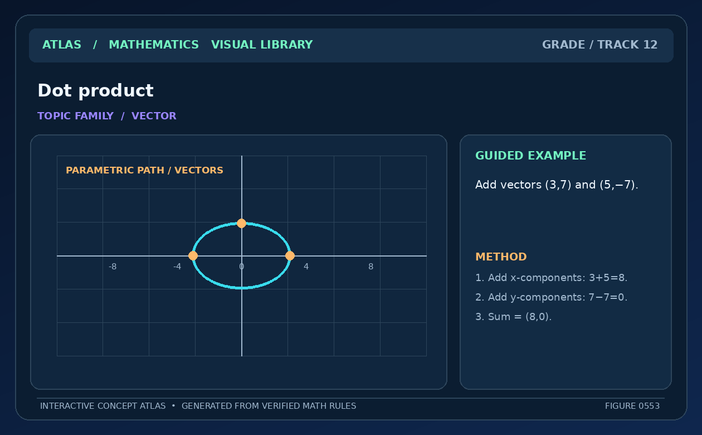
Add vectors (3,7) and (5,−7).
- Add x-components: 3+5=8.
- Add y-components: 7−7=0.
- Sum = (8,0).
Find the x-component of (3,7)+(5,5).
Hint: Add corresponding components.
Show answer and verify
8
Check the units, inputs and intermediate steps. Different solution methods may be valid.
Orthogonal vectors
Orthogonal vectors: Resolve vectors into components before adding or taking dot products. Magnitude in 2D is sqrt(x²+y²).
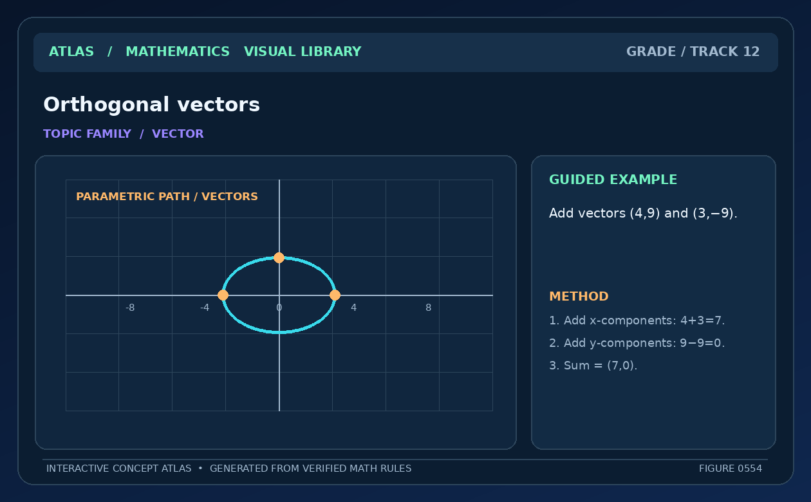
Add vectors (4,9) and (3,−9).
- Add x-components: 4+3=7.
- Add y-components: 9−9=0.
- Sum = (7,0).
Find the x-component of (4,9)+(3,3).
Hint: Add corresponding components.
Show answer and verify
7
Check the units, inputs and intermediate steps. Different solution methods may be valid.
Component form
Component form: Resolve vectors into components before adding or taking dot products. Magnitude in 2D is sqrt(x²+y²).
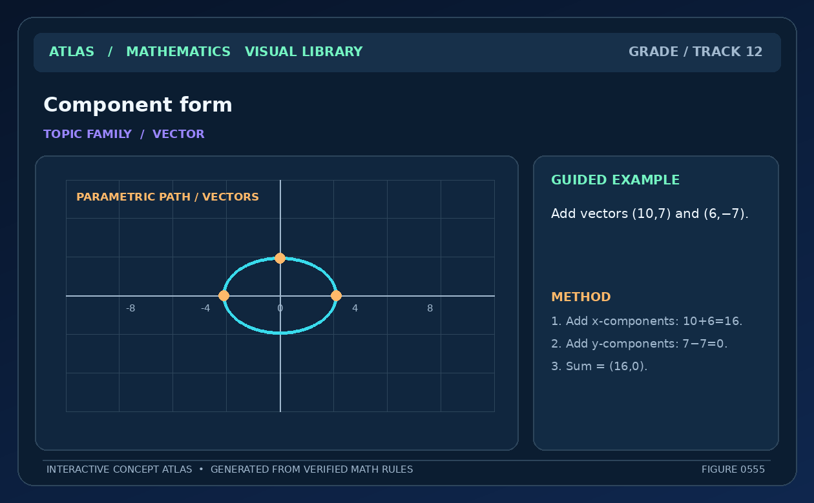
Add vectors (10,7) and (6,−7).
- Add x-components: 10+6=16.
- Add y-components: 7−7=0.
- Sum = (16,0).
Find the x-component of (10,7)+(6,6).
Hint: Add corresponding components.
Show answer and verify
16
Check the units, inputs and intermediate steps. Different solution methods may be valid.
Vector projections
Vector projections: Resolve vectors into components before adding or taking dot products. Magnitude in 2D is sqrt(x²+y²).
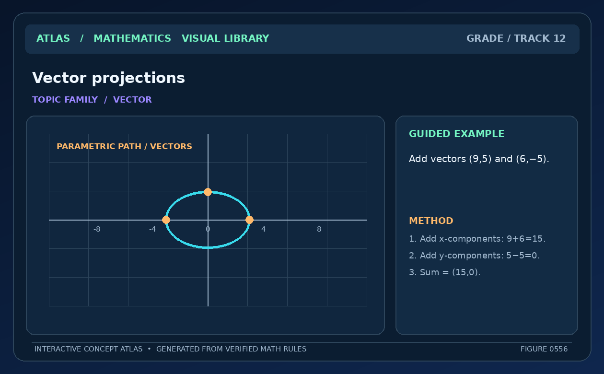
Add vectors (9,5) and (6,−5).
- Add x-components: 9+6=15.
- Add y-components: 5−5=0.
- Sum = (15,0).
Find the x-component of (9,5)+(6,6).
Hint: Add corresponding components.
Show answer and verify
15
Check the units, inputs and intermediate steps. Different solution methods may be valid.
Polar coordinates
Polar coordinates: Represent a point with radius r and angle θ measured from the polar axis. Convert using x=r cosθ and y=r sinθ.
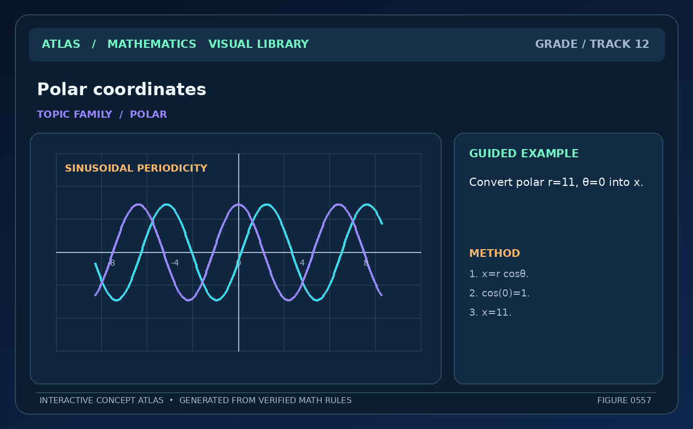
Convert polar r=11, θ=0 into x.
- x=r cosθ.
- cos(0)=1.
- x=11.
For polar r=9, θ=π/2, what is the y-coordinate?
Hint: y=r sinθ.
Show answer and verify
9
Check the units, inputs and intermediate steps. Different solution methods may be valid.
Cartesian-to-polar conversions
Cartesian-to-polar conversions: Represent a point with radius r and angle θ measured from the polar axis. Convert using x=r cosθ and y=r sinθ.
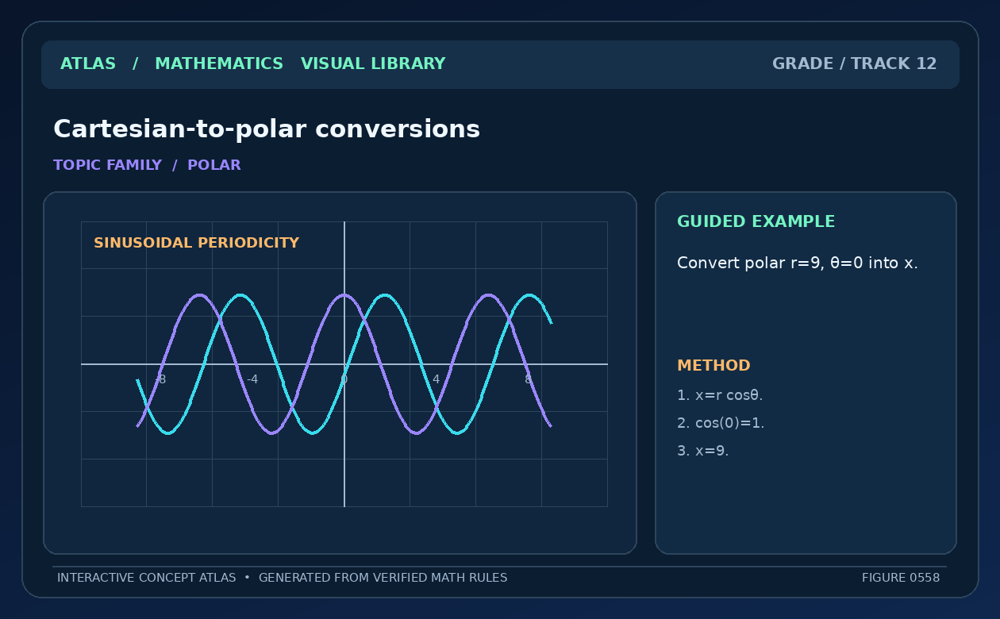
Convert polar r=9, θ=0 into x.
- x=r cosθ.
- cos(0)=1.
- x=9.
For polar r=7, θ=π/2, what is the y-coordinate?
Hint: y=r sinθ.
Show answer and verify
7
Check the units, inputs and intermediate steps. Different solution methods may be valid.
Polar graphs
Polar graphs: Represent a point with radius r and angle θ measured from the polar axis. Convert using x=r cosθ and y=r sinθ.
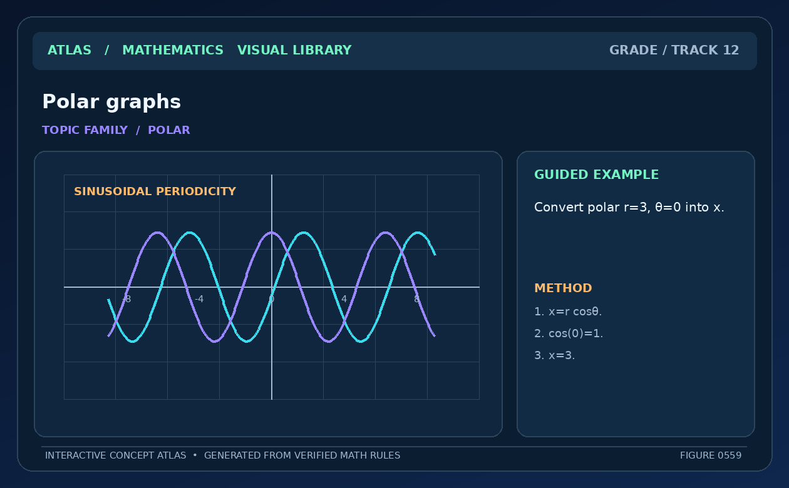
Convert polar r=3, θ=0 into x.
- x=r cosθ.
- cos(0)=1.
- x=3.
For polar r=3, θ=π/2, what is the y-coordinate?
Hint: y=r sinθ.
Show answer and verify
3
Check the units, inputs and intermediate steps. Different solution methods may be valid.
Symmetry in polar coordinates
Symmetry in polar coordinates: Represent a point with radius r and angle θ measured from the polar axis. Convert using x=r cosθ and y=r sinθ.
Convert polar r=10, θ=0 into x.
- x=r cosθ.
- cos(0)=1.
- x=10.
For polar r=9, θ=π/2, what is the y-coordinate?
Hint: y=r sinθ.
Show answer and verify
9
Check the units, inputs and intermediate steps. Different solution methods may be valid.
Complex plane coordinates
Complex plane coordinates: Use i²=−1 and collect real and imaginary parts separately. Complex conjugation flips the sign of the imaginary part.
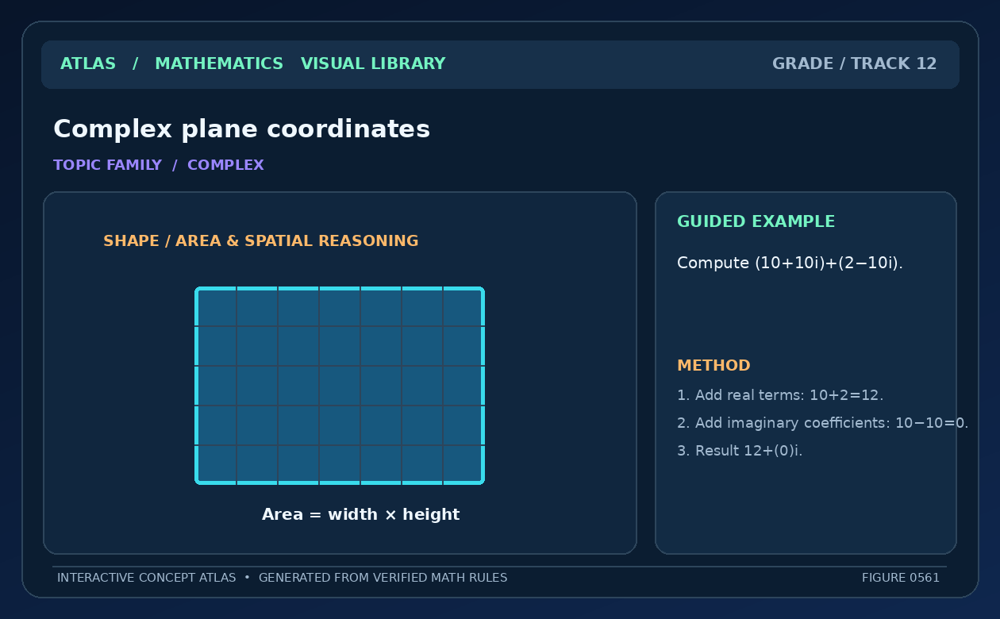
Compute (10+10i)+(2−10i).
- Add real terms: 10+2=12.
- Add imaginary coefficients: 10−10=0.
- Result 12+(0)i.
What is the real part of (10+10i)+(2+2i)?
Hint: Add the real coefficients separately.
Show answer and verify
12
Check the units, inputs and intermediate steps. Different solution methods may be valid.
Polar form of complex numbers
Polar form of complex numbers: Use i²=−1 and collect real and imaginary parts separately. Complex conjugation flips the sign of the imaginary part.
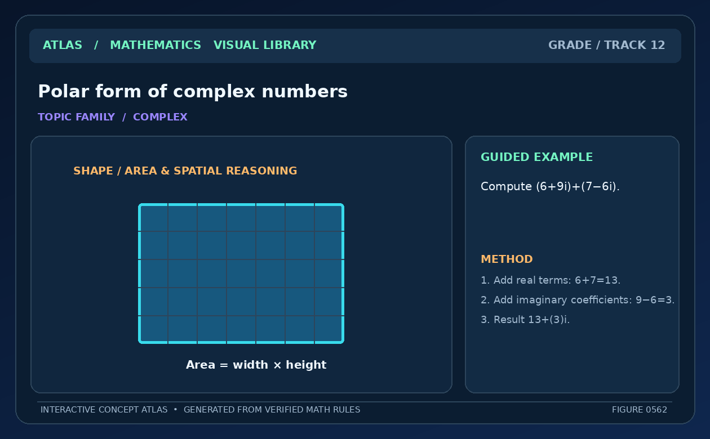
Compute (6+9i)+(7−6i).
- Add real terms: 6+7=13.
- Add imaginary coefficients: 9−6=3.
- Result 13+(3)i.
What is the real part of (6+9i)+(7+2i)?
Hint: Add the real coefficients separately.
Show answer and verify
13
Check the units, inputs and intermediate steps. Different solution methods may be valid.
De Moivre theorem
De Moivre theorem: Use i²=−1 and collect real and imaginary parts separately. Complex conjugation flips the sign of the imaginary part.
Compute (7+10i)+(5−7i).
- Add real terms: 7+5=12.
- Add imaginary coefficients: 10−7=3.
- Result 12+(3)i.
What is the real part of (7+10i)+(5+2i)?
Hint: Add the real coefficients separately.
Show answer and verify
12
Check the units, inputs and intermediate steps. Different solution methods may be valid.
Roots of unity
Roots of unity: Use i²=−1 and collect real and imaginary parts separately. Complex conjugation flips the sign of the imaginary part.
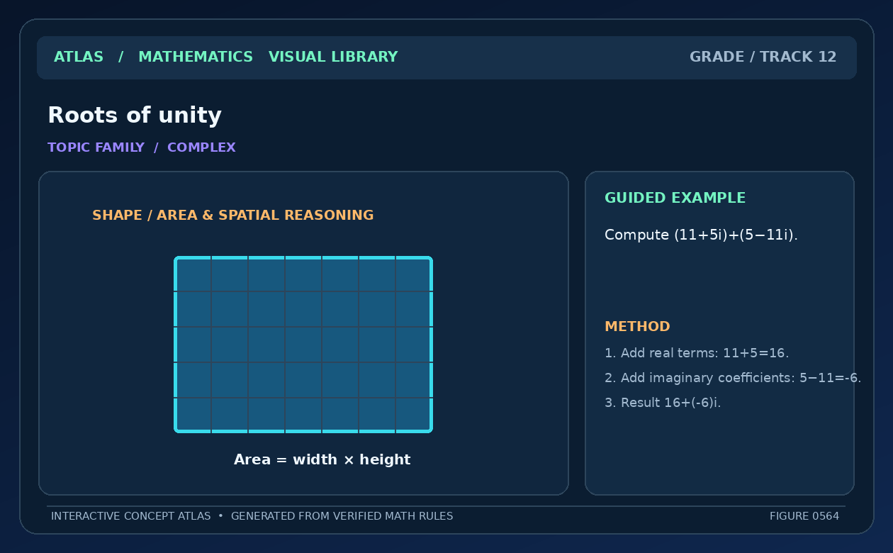
Compute (11+5i)+(5−11i).
- Add real terms: 11+5=16.
- Add imaginary coefficients: 5−11=-6.
- Result 16+(-6)i.
What is the real part of (11+5i)+(5+2i)?
Hint: Add the real coefficients separately.
Show answer and verify
16
Check the units, inputs and intermediate steps. Different solution methods may be valid.
Rates of change toward a limit
Rates of change toward a limit: Analyze what a function approaches as x tends to a value, independent of the actual value at that point. Numerical values suggest a limit but do not constitute proof.
Evaluate lim x→6 of (x+10).
- The function x+10 is continuous.
- Substitute x=6.
- Limit = 16.
Find lim x→6 of (3x+6).
Hint: Polynomials are continuous at finite inputs.
Show answer and verify
24
Check the units, inputs and intermediate steps. Different solution methods may be valid.
Numerical approaches to limits
Numerical approaches to limits: Analyze what a function approaches as x tends to a value, independent of the actual value at that point. Numerical values suggest a limit but do not constitute proof.
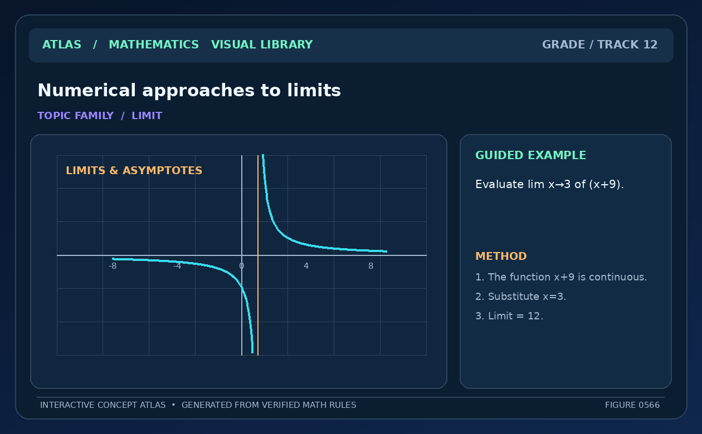
Evaluate lim x→3 of (x+9).
- The function x+9 is continuous.
- Substitute x=3.
- Limit = 12.
Find lim x→3 of (3x+3).
Hint: Polynomials are continuous at finite inputs.
Show answer and verify
12
Check the units, inputs and intermediate steps. Different solution methods may be valid.
Continuity at a point
Continuity at a point: Analyze what a function approaches as x tends to a value, independent of the actual value at that point. Numerical values suggest a limit but do not constitute proof.
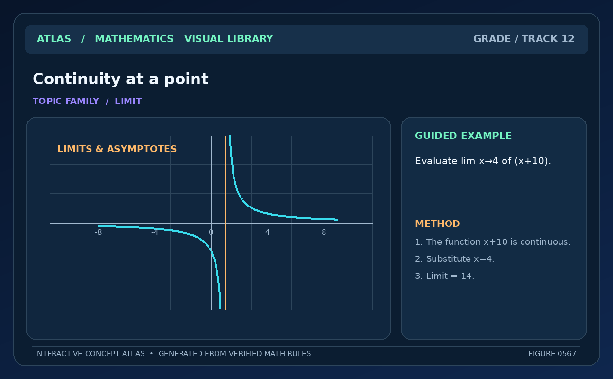
Evaluate lim x→4 of (x+10).
- The function x+10 is continuous.
- Substitute x=4.
- Limit = 14.
Find lim x→4 of (3x+4).
Hint: Polynomials are continuous at finite inputs.
Show answer and verify
16
Check the units, inputs and intermediate steps. Different solution methods may be valid.
One-sided limits
One-sided limits: Analyze what a function approaches as x tends to a value, independent of the actual value at that point. Numerical values suggest a limit but do not constitute proof.
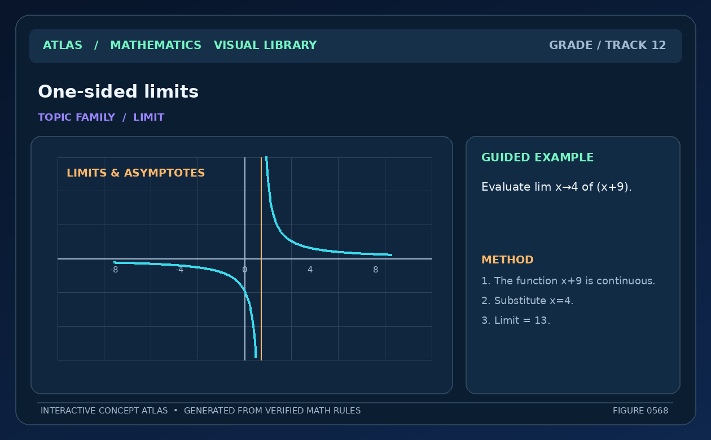
Evaluate lim x→4 of (x+9).
- The function x+9 is continuous.
- Substitute x=4.
- Limit = 13.
Find lim x→6 of (3x+4).
Hint: Polynomials are continuous at finite inputs.
Show answer and verify
22
Check the units, inputs and intermediate steps. Different solution methods may be valid.
Ellipse equations
Ellipse equations: Sketch and label known lengths, angles and shape properties before calculating. A valid geometric argument uses definitions and established properties.
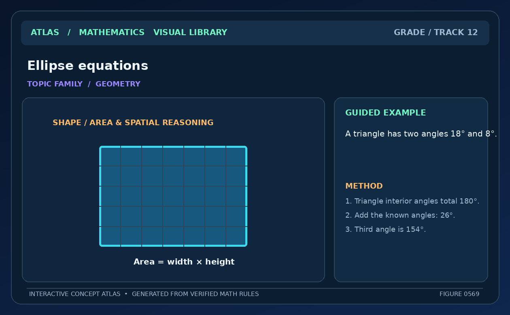
A triangle has two angles 18° and 8°.
- Triangle interior angles total 180°.
- Add the known angles: 26°.
- Third angle is 154°.
A triangle has angles 12° and 6°. Find the third.
Hint: Interior triangle angles sum to 180 degrees.
Show answer and verify
162
Check the units, inputs and intermediate steps. Different solution methods may be valid.
Hyperbola equations
Hyperbola equations: Sketch and label known lengths, angles and shape properties before calculating. A valid geometric argument uses definitions and established properties.
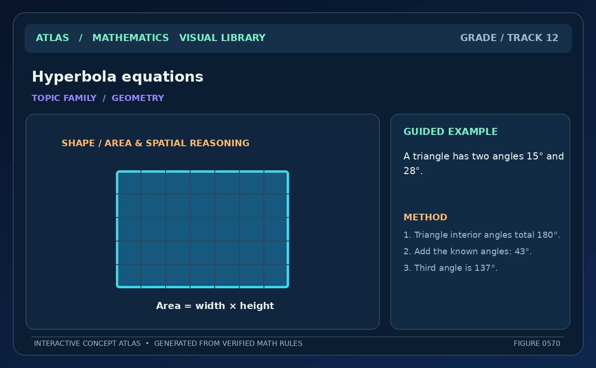
A triangle has two angles 15° and 28°.
- Triangle interior angles total 180°.
- Add the known angles: 43°.
- Third angle is 137°.
A triangle has angles 10° and 21°. Find the third.
Hint: Interior triangle angles sum to 180 degrees.
Show answer and verify
149
Check the units, inputs and intermediate steps. Different solution methods may be valid.
Conic eccentricity
Conic eccentricity: Sketch and label known lengths, angles and shape properties before calculating. A valid geometric argument uses definitions and established properties.
A triangle has two angles 18° and 36°.
- Triangle interior angles total 180°.
- Add the known angles: 54°.
- Third angle is 126°.
A triangle has angles 12° and 27°. Find the third.
Hint: Interior triangle angles sum to 180 degrees.
Show answer and verify
141
Check the units, inputs and intermediate steps. Different solution methods may be valid.
Continuous compounding
Continuous compounding: Convert a percentage to a decimal and write down the compounding period before computing. A loan APR and an investment APY are not automatically interchangeable.
Calculate one year of simple interest on $900 at 5% APR.
- Convert rate to 0.05.
- Interest = 900×0.05×1.
- Earn $45.00.
Interest on $600 at 5% for one year?
Hint: Simple interest is principal × annual rate × time.
Show answer and verify
30
Check the units, inputs and intermediate steps. Different solution methods may be valid.
Compound interest growth comparisons
Compound interest growth comparisons: Convert a percentage to a decimal and write down the compounding period before computing. A loan APR and an investment APY are not automatically interchangeable.
Calculate one year of simple interest on $900 at 1% APR.
- Convert rate to 0.01.
- Interest = 900×0.01×1.
- Earn $9.00.
Interest on $1000 at 1% for one year?
Hint: Simple interest is principal × annual rate × time.
Show answer and verify
10
Check the units, inputs and intermediate steps. Different solution methods may be valid.